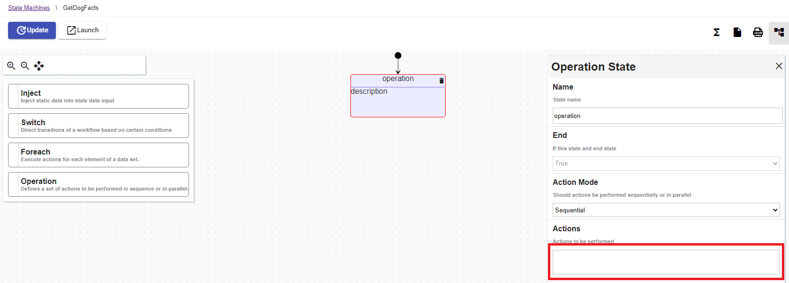

REST.API call
Warning
Make sure your working environment is properly configured.
Operation state can be added in the workflow to execute REST.API call, get the result and apply transformations on it.
This tutorial explains how to make REST.API call in your workflow. Before starting, open the portal and edit a workflow.
Add a Workflow function
According to the Serverless Workflow specification, workflow function is a reusable definition for service invocation and/or expression evaluation. It can be referenced by its identifier inside the workflow states.
In the workflow edition view, click on the  Functions button.
A popup will be displayed, fill-in the form like this and click on the
Functions button.
A popup will be displayed, fill-in the form like this and click on the Add button.
- Name: Name of the function for example :
GetDogFacts. - Type: Select the type of function :
RESTFul service invocation. - Operation: Enter the API url or the OPENAPI url for example :
http://dog-api.kinduff.com/api/facts.

Add an Operation state
Drag and drop the Operation state into the workflow. Edit its properties and add a new action by clicking on the text field Actions to be performed.

A popup will be displayed, fill-in the form like this and click on the Add button.
- Name : Name of the action :
GetDogFact. - Use results : If set to false, action data results are not added/merged to state data. Default must be
true. - Filter data results: Workflow expression that filters the actions data results for example:
.facts[0]. - Select state data element Workflow expression that selects a state data element to which the action results should be added/merged into for example :
.firstFact. - Type : Select the type of action :
Function. - Arguments : Arguments (input) passed to the referenced function.

Execute operation
When the workflow is executed :
- The operation state is going to fetch the result from the API :
{ "facts": ["Dogs do not have an appendix."], "status": true }. - The JSON result is transformed by the
resultsexpression : the incoming JSON{ "facts": ["Dogs do not have an appendix."], "status": true }becomes"Dogs do not have an appendix.". - The transformed JSON is added into the state data, the destination is specified by the
toStateDataparameter. The state should look like to something like this{ "firstFact" : "Dogs do not have an appendix." }.

YAML file :
id: 531a4b36-46f5-4406-b77a-1f9c50998668
version: 4
name: GetAllDogFact
description: GetAllDogFact
start:
stateName: b73b7168-d47c-4c2a-a0ce-0670e14a0aa8
states:
- id: b73b7168-d47c-4c2a-a0ce-0670e14a0aa8
name: operation
type: operation
actionMode: sequential
end: true
actions:
- name: GetDogFact
functionRef:
refName: GetDogFact
actionDataFilter:
useResults: true
results: ${ .facts[0] }
toStateData: ${ .firstFact }
functions:
- name: GetDogFact
type: rest
operation: http://dog-api.kinduff.com/api/facts
The workflow definition can be replaced by cliking on the button  .
.